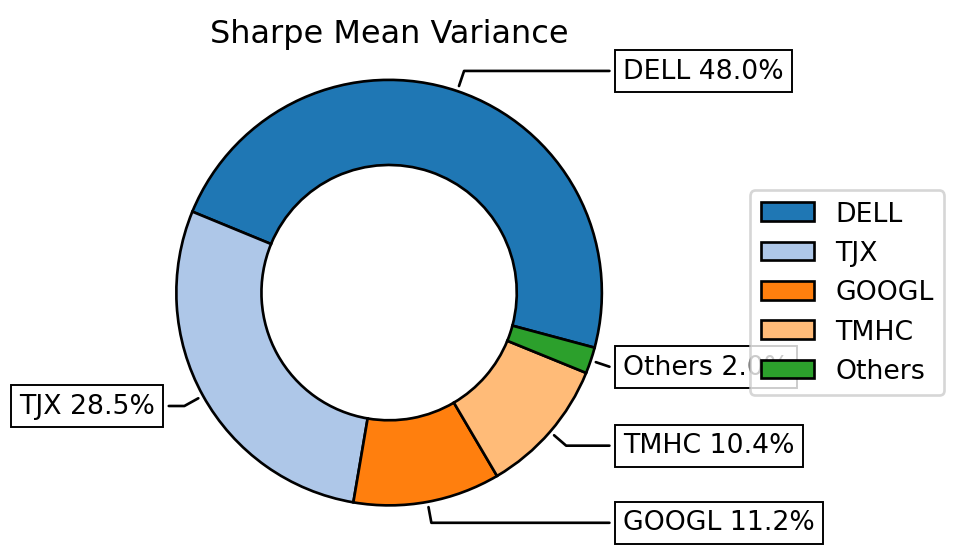

Code
import numpy as np
import pandas as pd
import riskfolio as rp
import matplotlib.pyplot as plt
import yfinance as yf
import warnings
warnings.filterwarnings("ignore")
pd.options.display.float_format = '{:.4%}'.format
# Date range
start = '2016-01-01'
end = '2019-12-30'
# Tickers of assets
assets = ['JCI', 'TGT', 'CMCSA', 'CPB', 'MO', 'APA', 'MMC', 'JPM',
'ZION', 'PSA', 'BAX', 'BMY', 'LUV', 'PCAR', 'TXT', 'TMO',
'DE', 'MSFT', 'HPQ', 'SEE', 'VZ', 'CNP', 'NI', 'T', 'BA']
assets.sort()
# Downloading data
data = yf.download(assets, start = start, end = end)
data = data.loc[:,('Adj Close', slice(None))]
data.columns = assets
Y = data[assets].pct_change().dropna()
display(Y.head())
#
#
# Building the portfolio object
port = rp.Portfolio(returns=Y)
# Calculating optimal portfolio
# Select method and estimate input parameters:
method_mu='hist' # Method to estimate expected returns based on historical data.
method_cov='hist' # Method to estimate covariance matrix based on historical data.
port.assets_stats(method_mu=method_mu, method_cov=method_cov, d=0.94)
# Estimate optimal portfolio:
model='Classic' # Could be Classic (historical), BL (Black Litterman) or FM (Factor Model)
rm = 'MV' # Risk measure used, this time will be variance
obj = 'Sharpe' # Objective function, could be MinRisk, MaxRet, Utility or Sharpe
hist = True # Use historical scenarios for risk measures that depend on scenarios
rf = 0 # Risk free rate
l = 0 # Risk aversion factor, only useful when obj is 'Utility'
w = port.optimization(model=model, rm=rm, obj=obj, rf=rf, l=l, hist=hist)
display(w.T)
#
# Plotting the composition of the portfolio
plt.figure(figsize=(10, 6))
ax = rp.plot_pie(w=w, title='Sharpe Mean Variance', others=0.05,
nrow=25, cmap = "tab20", height=3, width=5, ax=None)
points = 50 # Number of points of the frontier
frontier = port.efficient_frontier(model=model, rm=rm, points=points, rf=rf, hist=hist)
display(frontier.T.head())
# Plotting the efficient frontier
label = 'Max Risk Adjusted Return Portfolio' # Title of point
mu = port.mu # Expected returns
cov = port.cov # Covariance matrix
returns = port.returns # Returns of the assets
plt.figure(figsize=(10, 6))
ax = rp.plot_frontier(w_frontier=frontier, mu=mu, cov=cov, returns=returns, rm=rm,
rf=rf, alpha=0.05, cmap='viridis', w=w, label=label,
marker='*', s=16, c='r', height=3, width=5, ax=None)[ 0%% ][ 0%% ][****** 12%% ] 3 of 25 completed[******** 16%% ] 4 of 25 completed[******** 16%% ] 4 of 25 completed[******** 16%% ] 4 of 25 completed[************* 28%% ] 7 of 25 completed[*************** 32%% ] 8 of 25 completed[***************** 36%% ] 9 of 25 completed[***************** 36%% ] 9 of 25 completed[***************** 36%% ] 9 of 25 completed[***************** 36%% ] 9 of 25 completed[**********************52%% ] 13 of 25 completed[**********************56%%* ] 14 of 25 completed[**********************60%%*** ] 15 of 25 completed[**********************64%%***** ] 16 of 25 completed[**********************68%%******* ] 17 of 25 completed[**********************72%%********* ] 18 of 25 completed[**********************76%%********** ] 19 of 25 completed[**********************80%%************ ] 20 of 25 completed[**********************80%%************ ] 20 of 25 completed[**********************88%%**************** ] 22 of 25 completed[**********************92%%****************** ] 23 of 25 completed[**********************96%%******************** ] 24 of 25 completed[*********************100%%**********************] 25 of 25 completed| APA | BA | BAX | BMY | CMCSA | CNP | CPB | DE | HPQ | JCI | ... | NI | PCAR | PSA | SEE | T | TGT | TMO | TXT | VZ | ZION | |
|---|---|---|---|---|---|---|---|---|---|---|---|---|---|---|---|---|---|---|---|---|---|
| Date | |||||||||||||||||||||
| 2016-01-05 | -2.0257% | 0.4057% | 0.4035% | 1.9692% | 0.0180% | 0.9305% | 0.3678% | 0.5783% | 0.9483% | -1.1953% | ... | 1.5881% | 0.0212% | 2.8236% | 0.9758% | 0.6987% | 1.7539% | -0.1730% | 0.2410% | 1.3734% | -1.0857% |
| 2016-01-06 | -11.4863% | -1.5879% | 0.2412% | -1.7556% | -0.7727% | -1.2473% | -0.1736% | -1.1239% | -3.5867% | -0.9551% | ... | 0.5547% | 0.0212% | 0.1592% | -1.5646% | 0.3108% | -1.0155% | -0.7653% | -3.0048% | -0.9035% | -2.9144% |
| 2016-01-07 | -5.1388% | -4.1922% | -1.6573% | -2.7699% | -1.1046% | -1.9769% | -1.2206% | -0.8856% | -4.6058% | -2.5394% | ... | -2.2066% | -3.0309% | -1.0410% | -3.1557% | -1.6148% | -0.2700% | -2.2845% | -2.0570% | -0.5492% | -3.0020% |
| 2016-01-08 | 0.2736% | -2.2705% | -1.6037% | -2.5425% | 0.1099% | -0.2241% | 0.5707% | -1.6402% | -1.7642% | -0.1649% | ... | -0.1538% | -1.1366% | -0.7308% | -0.1449% | 0.0895% | -3.3839% | -0.1117% | -1.1386% | -0.9720% | -1.1254% |
| 2016-01-11 | -4.3383% | 0.1692% | -1.6851% | -1.0215% | 0.0915% | -1.1791% | 0.5674% | 0.5288% | 0.6616% | 0.0330% | ... | 1.6435% | 0.0000% | 0.9870% | -0.1450% | 1.2225% | 1.4570% | 0.5366% | -0.4607% | 0.5799% | -1.9918% |
5 rows × 25 columns
| APA | BA | BAX | BMY | CMCSA | CNP | CPB | DE | HPQ | JCI | ... | NI | PCAR | PSA | SEE | T | TGT | TMO | TXT | VZ | ZION | |
|---|---|---|---|---|---|---|---|---|---|---|---|---|---|---|---|---|---|---|---|---|---|
| weights | 0.0000% | 6.1590% | 11.5019% | 0.0000% | 0.0000% | 8.4806% | 0.0000% | 3.8194% | 0.0000% | 0.0000% | ... | 10.8264% | 0.0000% | 0.0000% | 0.0000% | 0.0000% | 7.1804% | 0.0000% | 0.0000% | 4.2740% | 0.0000% |
1 rows × 25 columns
| APA | BA | BAX | BMY | CMCSA | CNP | CPB | DE | HPQ | JCI | ... | NI | PCAR | PSA | SEE | T | TGT | TMO | TXT | VZ | ZION | |
|---|---|---|---|---|---|---|---|---|---|---|---|---|---|---|---|---|---|---|---|---|---|
| 0 | 0.0000% | 0.0000% | 5.2378% | 4.3880% | 2.1297% | 6.9906% | 3.2270% | 0.0742% | 0.0000% | 2.8447% | ... | 11.4530% | 0.0000% | 14.9247% | 0.1681% | 6.5902% | 4.0899% | 0.0000% | 0.0000% | 8.2767% | 0.0000% |
| 1 | 0.0000% | 2.0125% | 8.4904% | 0.7981% | 1.6844% | 8.5599% | 2.1529% | 1.3613% | 0.0000% | 1.0444% | ... | 13.4497% | 0.0000% | 9.2099% | 0.0000% | 5.5815% | 5.5235% | 0.0000% | 0.0000% | 8.7591% | 0.0000% |
| 2 | 0.0000% | 2.8165% | 9.3712% | 0.0000% | 1.1980% | 9.1476% | 1.7065% | 1.7396% | 0.0000% | 0.0872% | ... | 14.2328% | 0.0000% | 6.4848% | 0.0000% | 5.1002% | 6.0539% | 0.0000% | 0.0000% | 9.0039% | 0.0000% |
| 3 | 0.0000% | 3.4306% | 9.9329% | 0.0000% | 0.5694% | 9.5578% | 1.0811% | 1.9316% | 0.0000% | 0.0000% | ... | 14.7708% | 0.0000% | 3.6630% | 0.0000% | 4.2578% | 6.4249% | 0.0000% | 0.0000% | 9.2132% | 0.0000% |
| 4 | 0.0000% | 3.9343% | 10.3865% | 0.0000% | 0.0003% | 9.8874% | 0.3998% | 2.0811% | 0.0000% | 0.0000% | ... | 15.1319% | 0.0000% | 1.0859% | 0.0000% | 3.3463% | 6.7109% | 0.0000% | 0.0000% | 9.2764% | 0.0000% |
5 rows × 25 columns
